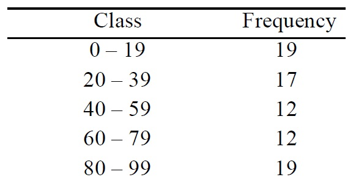
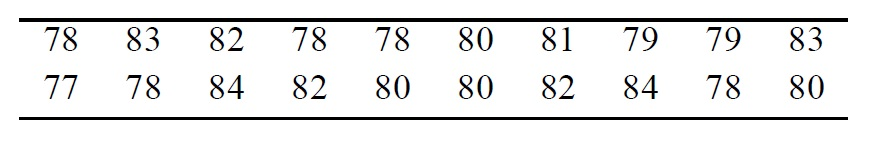
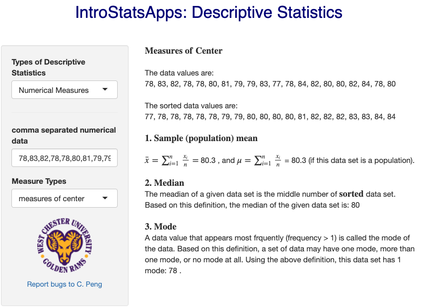
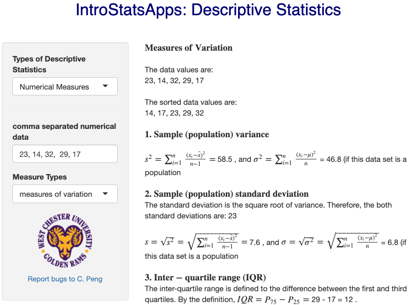
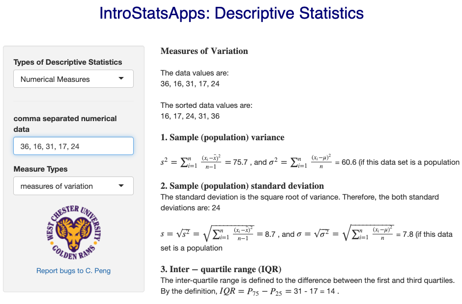
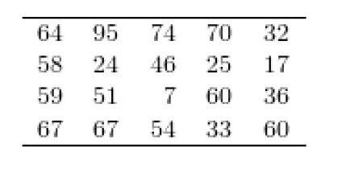
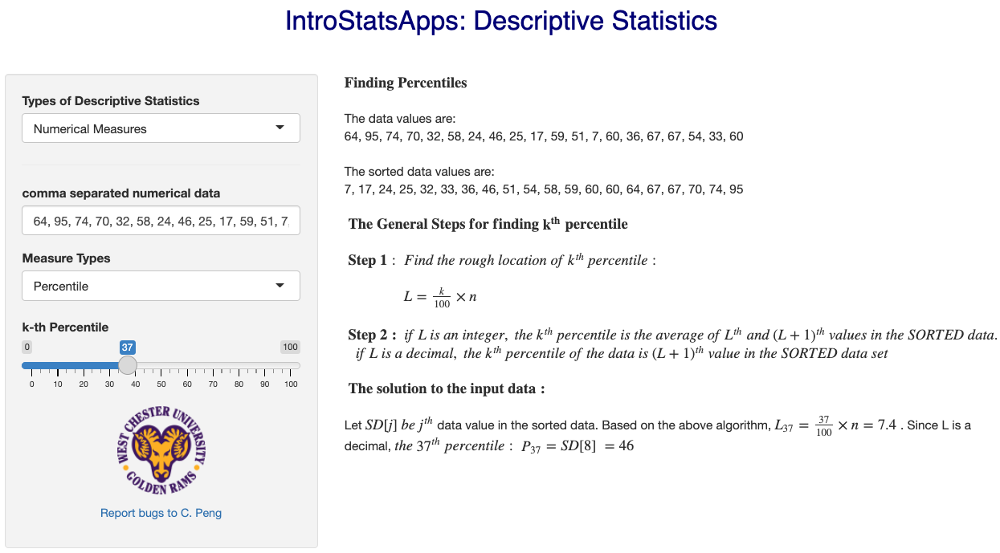
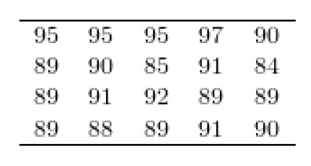
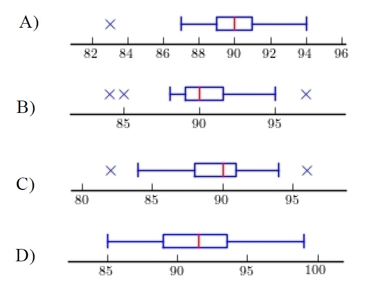
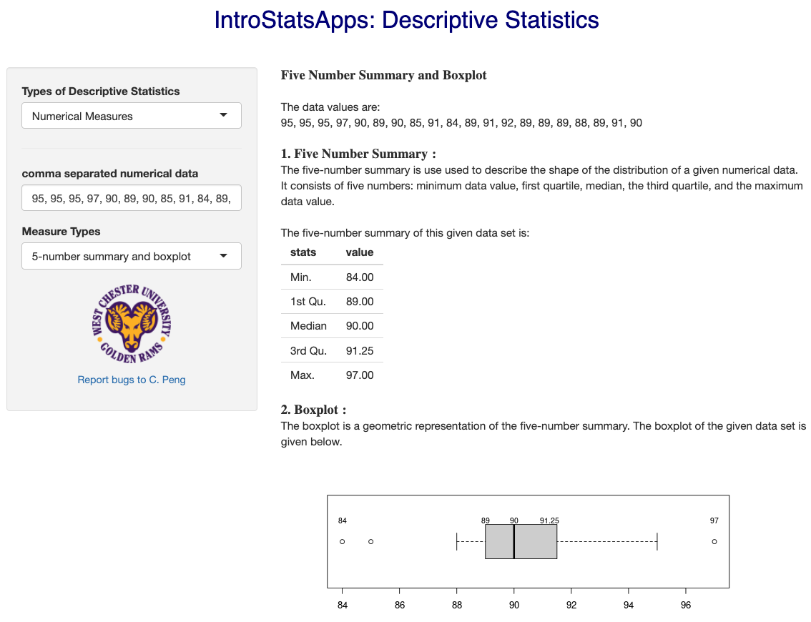

|
Please show your work before checking the answer and explanations. The questions in the exams will be similar to these in the practice exercises.
Problem 1. Find the mean for the following data set:
15 31 34 20 26
A) 26
B) 7.0
C) 25.2
D) 19
View Answer
Ans : C
Explanation: direct calculation.
Problem 2. Find the median for the following data set:
13 23 11 26 22 18
A) 5.4
B) 15
C) 18.8
D) 20
View Answer
Ans : D
Explanation: Use the definition of median (based on the cases of even and odd number of data values). Caution: Always sort the data before locating the median.
Problem 3. Use the given frequency distribution to approximate the mean.

A) 30.2
B) 15.8
C) 48.7
D) 30.4
View Answer
Ans : C
Explanation: Use the steps in a worked example in the class note.
Problem 4. Following are heights, in inches, for a sample of college basketball players.

Find the mean height of the basketball players.
A) 4.6 inches
B) 80.3 inches
C) 70 inches
D) 80.5 inches
View Answer
Ans : B
Explanation:Direct calculation. You can also use R command to get the mean as shown in the following screen shot.

Problem 5. Find the sample variance for the following data set:
23 14 32 29 17
A) 18
B) 58.5
C) 46.8
D) 7.6
View Answer
Ans : B
Explanation: use the sample variance formula to calcuate the variance directly.

Problem 6. Find the population standard deviation for the following data set:
36 16 31 17 24
A) 60.6
B) 75.7
C) 7.8
D) 8.7
View Answer
Ans : C
Explanation: obvious. Caution: we should use the formula for population variance.

Problem 7. A population has a mean μ = 46 and standard deviation σ = 15. Find the z-score for a
population value of 13.
A) -0.5
B) -2.2
C) -33
D) 0.9
View Answer
Ans : B
Explanation: (13-45)/15 = -2.2.
Problem 8. For the data set below, find the 37th percentile.

A) 46
B) 36
C) 48.5
D) 37
View Answer
Ans : A
Explanation: Direct calculation based on the algorithm specified in the class note. Caution: sort the data before locating the percentile. THe following screen shot outlines the calculation to find the 37th percentile.

Problem 9. A soft-drink bottling company fills and ships soda in plastic bottles with a target
volume of 354 milliliters. The filling machinery does not deliver a perfectly consistent
volume of liquid to each bottle, and the three quartiles for the fill volume are Q1 = 351,
Q2 = 357, and Q3 = 360.
Find the IQR.
A) 13.5
B) 10.8
C) 3
D) 9
View Answer
Ans : D
Explanation: IQR = Q3 - Q1 = 360 - 351 = 9.
Problem 10. Construct a boxplot for the data set below.


View Answer
Ans : B
Explanation: Calculate the quartiles to identify the correct box plot. The exclusion is useful once you have 25th percentile.

|